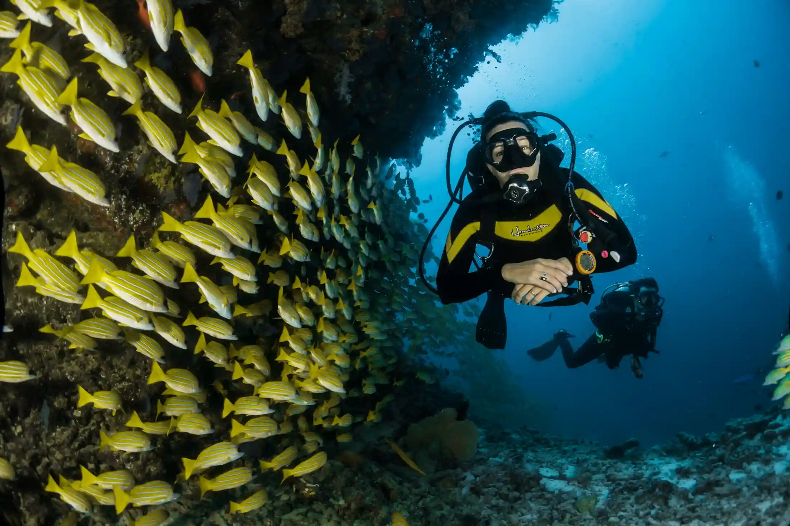
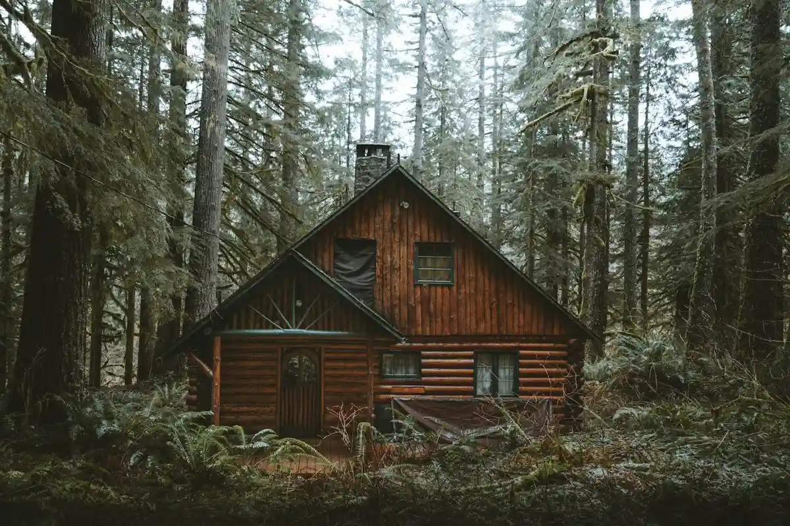
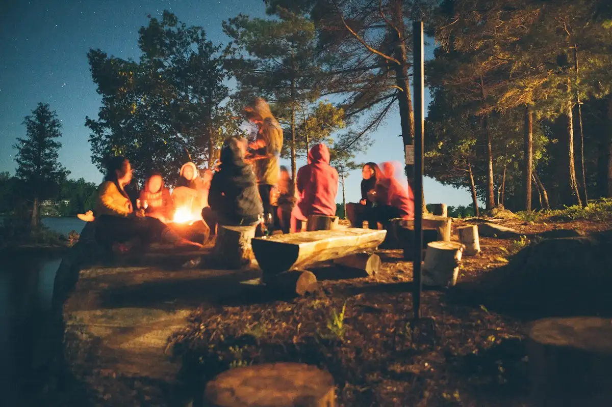

Services · Experiences
Ways to explore.
Walks, paddles, wildlife mornings, hill stays and community-led days — every experience is small, seasonal, and staffed by people from the region it passes through.

Wildlife Expeditions
Watching without following.
Wildlife-focused departures that keep to established tracks and respectful viewing distances. No luring, no calls, no handling — because a quiet sighting is worth more than a guaranteed one.
- Dawn and dusk wildlife drives
- Birding-focused departures with a naturalist
- Multi-day wildlife corridors in small groups
Trekking & Trails
Long walks, light loads.
Multi-day treks with local guides and porters paid fairly. Routes are planned around drainage, gradient and season — not distance on a map.
Ridge Walks
Two to four days along forested ridges, camping in seasonal camps that pack down completely.
View route 02Valley Trails
Lower-elevation walks through river valleys and hill villages, with homestay nights.
View route 03Day Hikes
Single-day walks for travellers who want landscape without committing to a full trek.
View route 04Guided Night Walks
Short evening walks with a naturalist, focused on the sounds and small life of the forest.
View route
Water & Wilderness
Moving with the water.
Paddles and gentle floats through wetlands, backwaters and river basins — timed with the water itself, not with the clock. Slow, quiet, and limited to small groups.
Kayak Days
Half-day paddles on still water and slow rivers, guided by locals who know the channels.
River Basin Floats
Quiet boat journeys through riverine forest, mostly at dawn and dusk.
Wild Swims
Where it's safe and appropriate, a slow swim in a river pool — brief and unhurried.
Eco Stays
Places built for their climate.
Accommodation chosen for what it's made of, how it sits on the land, and who runs it — not for how it photographs.

Forest Cabins
Timber structures raised on stilts to leave the ground beneath them undisturbed.
Explore stays
Tented Camps
Seasonal camps that pack down completely, leaving no permanent footprint.
Explore staysHomestays
Family-run houses in hill villages, where the money stays in the village.
Explore staysCommunity Experiences
Days that stay where they land.
Cooking with host families, walking with shepherds, learning from artisans who work in materials native to the region — experiences designed so that travel revenue does more than pass through.
-
Village kitchens
Meals cooked with host families, using what the season provides.
-
Craft workshops
Time with artisans working in bamboo, cane, and local textile traditions.
-
Pastoral walks
Short walks alongside shepherds and farming families in hill country.

Private Journeys
Trips built around you.
When the dates, the pace or the group is yours alone, we build the itinerary from scratch — then adjust it as the season shifts.
Family Journeys
Shorter days, more rest, gentler routes. Built for mixed ages and mixed energy.
Enquire 02Slow Travel Itineraries
Two nights minimum per stop. Fewer regions, more time inside each one.
Enquire 03Photography & Field Trips
Departures planned around light, not landmarks — for travellers working with a lens.
Enquire 04Milestone Trips
Birthdays, retirements, reunions — quiet celebrations in places that can hold them.
EnquireConservation Experiences
Travel that gives back attention.
Experiences built around learning — not around pretending to do conservation. We contribute to local work; we don't put travellers in the middle of it.
Naturalist-led field days
Days spent with a local naturalist, learning to read the forest — trails, calls, water, light.
Birding with purpose
Birding departures whose sightings contribute to regional records kept by local groups.
Watershed and wetland walks
Walks that follow water — springs, streams, tanks — to understand how the landscape holds together.
Community-led conservation visits
Time with communities already doing the work — listening, not photographing.
These experiences don't claim measurable conservation outcomes. What they do claim is careful attention, honest conversation, and revenue that stays close to the region.
Build Your Journey
Start with a conversation.
Tell us what you're after — the pace, the season, the group, the landscape. We'll tell you honestly whether we're the right fit, and what the region can comfortably host.

Start Exploring
Pick an experience —
or let one find you.
Every journey begins with a short conversation. Tell us roughly what you're after and we'll suggest a direction.